MANTENIMIENTO Y REPARACIÓN
SERVICIO EN VEHÍCULO
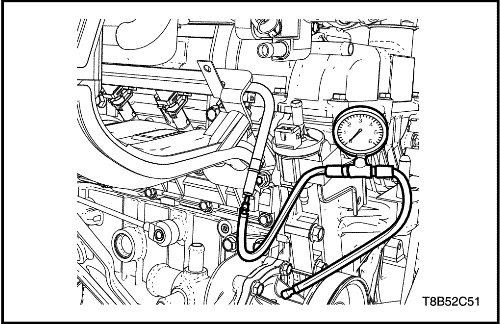


Prueba de presión de combustible
Herramientas necesarias
DW100-010 Manómetro: medida de presión del combustible
Precaución: El sistema de combustible está sometido a presión. Para evitar derrames de combustible y el riesgo de lesiones personales o de incendio, es necesario liberar la presión del sistema de combustible antes de desconectar las tuberías de dicho sistema.
- Libere la presión del combustible.
- Desmonte el conjunto de filtro del aire. Consulte la Sección 1C1, Mecánica del motor.
- Monte el manómetro de medida de presión del combustible (DW100-010).
- Mida la presión del combustible.
- Especif. de presión del combustible: 380 kPa (tensión de batería: 13,2 V)

Depósito de combustible
Procedimiento de desmontaje
Precaución: El sistema de combustible está sometido a presión. Para evitar derrames de combustible y el riesgo de lesiones personales o de incendio, es necesario liberar la presión del sistema de combustible antes de desconectar las tuberías de dicho sistema.
- Libere la presión del combustible. Consulte "Bomba de combustible y transmisor de combustible"en esta sección.
- Desconecte el cable negativo de la batería.
- Vacíe el depósito de combustible.
- Quite la abrazadera de retención del cable del freno de estacionamiento y el soporte del depósito de combustible para disponer de espacio para desmontar el depósito.

- Quite la abrazadera del tubo de llenado del depósito de combustible.
- Desconecte el tubo de llenado del depósito de combustible.
- Desconecte del depósito de combustible el tubo de llenado de este depósito.
- Desconecte del tubo de vapor de la válvula de control el tubo de vapor del cartucho.

- Desenchufe el conector del cableado de la bomba de combustible situada en la esquina trasera derecha del depósito de combustible.
- Desconecte la tubería de entrada de combustible situada cerca de la parte delantera derecha del depósito de combustible.
- Quite los clips del cableado y de los conductos de combustible si fuera necesario.

- Apoye adecuadamente el depósito de combustible.
- Quite los tornillos de retención del depósito de combustible.
- Baje cuidadosamente el depósito de combustible.
- Desmonte el depósito de combustible.
- Sustituya cualquier pieza defectuosa si fuera necesario.
procedimiento de montaje
- Ponga el depósito de combustible en posición.
- Coloque los tornillos de fijación del depósito de combustible.
Apretar
Apriete los tornillos de retención del depósito de combustible hasta 20 N•m (15 lb-pie).
- Conecte la tubería de salida de combustible.
- Ponga los clips del cableado y de los conductos de combustible como sea preciso.
- Enchufe el conector eléctrico de la bomba de combustible.
- Conecte la tubería de vapor de combustible.
- Conecte el tubo de llenado y el tubo de ventilación del depósito de combustible.
- Ponga la abrazadera del tubo de llenado en el depósito de combustible.
- Monte las abrazaderas de fijación del cable del freno de estacionamiento y el soporte.
Apretar
Apriete las abrazaderas de fijación del cable del freno de estacionamiento hasta 10 N•m (89 lb-pulg.).
- Conecte el cable negativo de la batería.
- Llene el depósito de combustible.
- Efectúe una comprobación de fugas en el depósito de combustible y las conexiones de las tuberías de combustible.
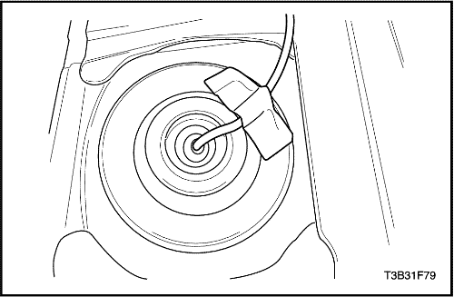
Bomba de combustible y transmisor de combustible
Herramientas necesarias
EN-49090 Extractor/instalador: anillo de cierre de la bomba de combustible
Procedimiento de desmontaje
Precaución: El sistema de combustible está sometido a presión. Para evitar derrames de combustible y el riesgo de lesiones personales o de incendio, es necesario liberar la presión del sistema de combustible antes de desconectar las tuberías de dicho sistema.
- Libere la presión del combustible.
- Desconecte el cable negativo de la batería.
- Desmonte el asiento trasero. Consulte la Sección 9H, Asientos.
- Desmonte la tapa de acceso a la bomba de combustible.
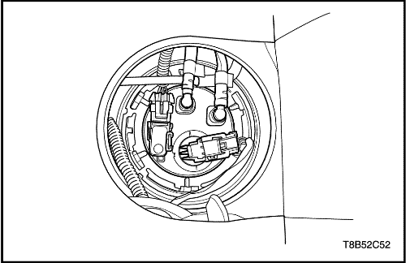
- Afloje el cierre empujando la toma del conector eléctrico de la bomba de combustible.
- Desenchufe el conector eléctrico del conjunto de la bomba de combustible.
- Desconecte la tubería de salida de combustible.
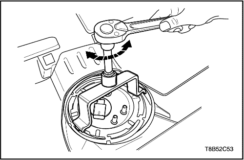
- Desmonte el anillo de cierre de la bomba de combustible utilizando un extractor/instalador para el mismo (EN-49090).
- Desmonte la bomba de combustible.
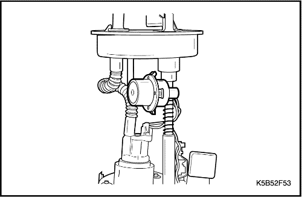
- Desconecte el aislador.
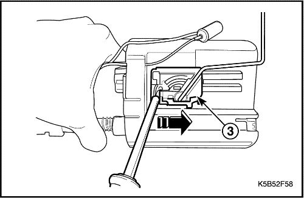
- Desmonte el conjunto del transmisor de combustible.
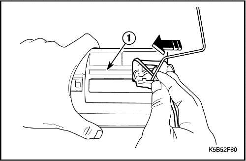
procedimiento de montaje
Precaución: Preste atención para montar con exactitud el transmisor de combustible al alojamiento de la bomba. Si no queda montado con exactitud, la indicación del combustible podría ser incorrecta.
- Monte el conjunto del transmisor de combustible.
- Conecte el aislante del transmisor de combustible.
- Monte la bomba de combustible al depósito de combustible.
- Monte el anillo de cierre de la bomba de combustible utilizando un extractor/instalador para el mismo (EN-49090).
- Enchufe el conector eléctrico en el conjunto de la bomba de combustible.
- Apriete el cierre empujando la toma del conector eléctrico de la bomba de combustible.
- Conecte la tubería de salida de combustible.
- Ponga la tapa de acceso a la bomba de combustible.
- Conecte el cable negativo de la batería.
- Efectúe una comprobación del funcionamiento de la bomba de combustible.
- Monte el asiento trasero. Consulte la Sección 9H, Asientos.
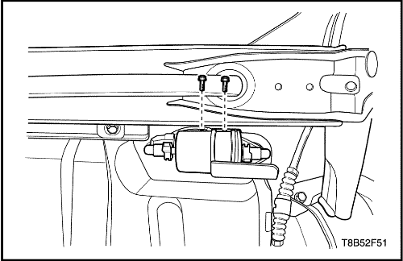
Filtro de combustible
Procedimiento de desmontaje
Precaución: El sistema de combustible está sometido a presión. Para evitar derrames de combustible y el riesgo de lesiones personales o de incendio, es necesario liberar la presión del sistema de combustible antes de desconectar las tuberías de dicho sistema.
- Libere la presión del combustible.
- Desconecte el cable negativo de la batería.
- Desconecte las tuberías de entrada/salida de combustible desplazando el cierre del conector de la tubería hacia delante y tirando del manguito para extraerlo del tubo del filtro de combustible.
- Quite los tornillos del soporte del filtro de combustible.
- Desmonte el filtro de combustible.
procedimiento de montaje
- Monte el filtro de combustible.
- Coloque los tornillos del soporte del filtro de combustible.
- Conecte las tuberías del conector rápido de admisión/salida.
- Conecte el cable negativo de la batería.
Canal e inyectores de combustible
Procedimiento de desmontaje
Precaución: El sistema de combustible está sometido a presión. Para evitar derrames de combustible y el riesgo de lesiones personales o de incendio, es necesario liberar la presión del sistema de combustible antes de desconectar las tuberías de dicho sistema.
- Desconecte el cable negativo de la batería.
- Libere la presión del combustible.
- Desmonte el conjunto de filtro del aire. Consulte la Sección 1C1, Mecánica del motor.
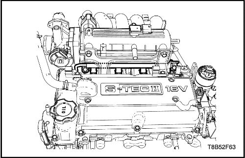
- Desconecte la tubería de alimentación de combustible de conector rápido del canal de combustible.
- Desconecte el mazo de cables del lado superior del canal de combustible.
- Desenchufe el conector del cableado de los inyectores de combustible.
- Quite los tornillos de fijación de la rampa de inyectores.
- Desmonte la rampa de inyectores con los inyectores unidos a la misma.
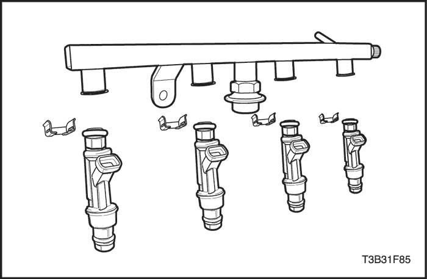
- Desmonte los clips de retención de los inyectores.
- Desmonte los inyectores tirando de ellos hacia abajo y hacia fuera.
- Deseche las juntas tóricas de los inyectores.
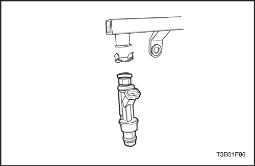
procedimiento de montaje
Importante: Los distintos inyectores de combustible se calibran para distintos caudales. Cuando encargue nuevos inyectores, asegúrese de pedir el mismo número de pieza que el que aparece en el inyector viejo.
- Monte las juntas tóricas nuevas en los inyectores.
- Monte el clip de retención tras instalar los inyectores en el canal de combustible.
- Monte el conjunto de inyector y canal de combustible en el colector de admisión.
- Coloque los tornillos de retención de la rampa de inyectores.
Apretar
Tornillo de retención del canal de combustible a 10 N•m (7,3 lb-pie).
- Enchufe los conectores del cableado de los inyectores de combustible.
- Conecte el cableado en el lado superior del canal de combustible.
- Conecte la tubería de alimentación de combustible de conector rápido en el canal de combustible.
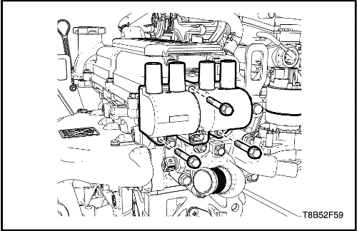
Bobina de encendido (DIS) y soporte
Procedimiento de desmontaje
- Desconecte el cable negativo de la batería.
- Retire el cable de encendido.
- Desenchufe el conector del cableado de encendido.
- Extraiga los tornillos de retención de la bobina de encendido.
- Desmonte la bobina de encendido.
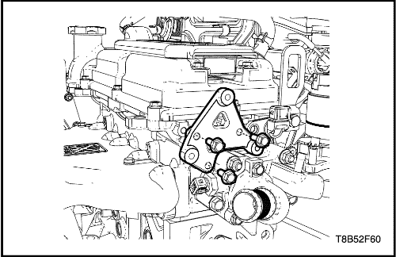
- Extraiga los tornillos de retención del soporte de la bobina de encendido.
- Desmonte el soporte de la bobina de encendido.
procedimiento de montaje
- Monte el soporte de la bobina de encendido.
- Monte los tornillos de retención del soporte de la bobina de encendido.
Apretar
Tornillo de retención del soporte de la bobina de encendido a 10 N•m (7,3 lb-pie).
- Monte la bobina de encendido.
- Monte los tornillos de retención de la bobina de encendido.
Apretar
Tornillo de retención de la bobina de encendido a 10 N•m (7,3 lb-pie).
- Enchufe el conector del cableado de la bobina de encendido.
- Conecte el cable de encendido.
- Conecte el cable negativo de la batería.
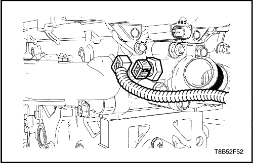
Sensor de temperatura del refrigerante del motor (ECT)
Procedimiento de desmontaje
Aviso: Tenga cuidado cuando manipule el ECT. Cualquier daño en el sensor afectará al correcto funcionamiento del sistema de inyección de combustible.
- Libere la presión del sistema de refrigerante y sustráigalo. Consulte la Sección 1D, Sistema de refrigeración del motor.
- Desconecte el cable negativo de la batería.
- Desenchufe el conector del sensor de temperatura del refrigerante del motor (ECT).
- Desmonte con cuidado el sensor de ECT.
procedimiento de montaje
- Monte el sensor ECT.
Apretar
Tornillo del sensor de temperatura de refrigerante del motor a 17,5 N•m (12,9 lb-pie).
- Enchufe el conector del sensor de temperatura del refrigerante del motor (ECT).
- Conecte el cable negativo de la batería.
- Llene el sistema de refrigeración. Consulte la Sección 1D, Sistema de refrigeración del motor.
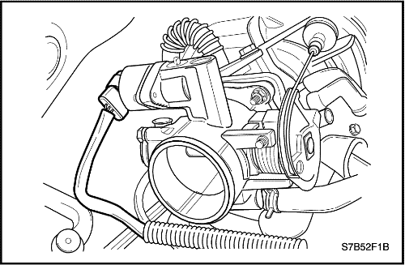
Sensor de posición de la mariposa
Procedimiento de desmontaje
- Desconecte el cable negativo de la batería.
- Desmonte el conjunto de filtro del aire. Consulte la Sección 1C1, Mecánica del motor.
- Desenchufe el conector del sensor de posición del acelerador (TPS).
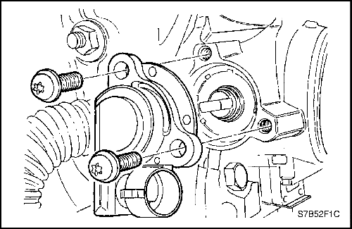
- Quite los tornillos de retención TPS.
- Desmonte el TPS.
procedimiento de montaje
- Monte el TPS.
- Monte los tornillos de retención TPS.
Apretar
Tornillos de retención del sensor de posición del acelerador (TPS): 2,7 N•m (23,9 lb-pulg.).
- Enchufe el conector del sensor de posición del acelerador (TPS).
- Monte el conjunto del filtro de aire. Consulte la Sección 1C1, Mecánica del motor.
- Conecte el cable negativo de la batería.
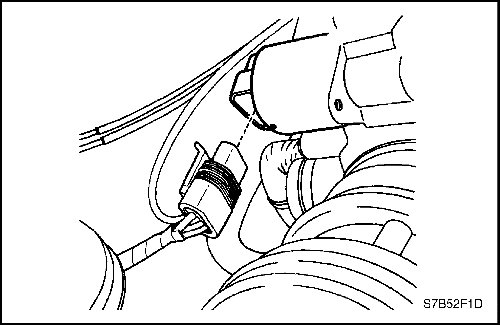
Válvula de control del aire de ralentí (IACV)
Procedimiento de desmontaje
- Desconecte el cable negativo de la batería.
- Desenchufe el conector de la válvula de control del aire de ralentí (IACV).
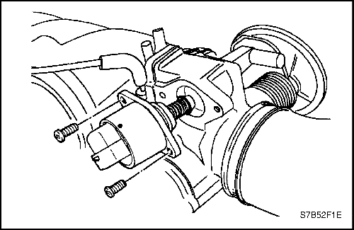
Aviso: Limpie la zona de asiento de la junta- tórica de la válvula de IAC, el asiento de la válvula de aguja y el conducto de aire con un limpiador apropiado para el sistema de combustible. No use metiletilcetona.
- Quite los tornillos de retención IACV.
- Desmonte la IACV.
procedimiento de montaje
Aviso: Si va a instalar una válvula de IAC, cerciórese de sustituirla por una válvula idéntica. En IACVs que hayan estado en servicio, no empuje la aguja de la válvula. La fuerza necesaria para desplazar la aguja puede dañar las roscas del accionamiento por tornillo sinfín.
- Monte una junta tórica nueva con la IACV.
- Monte los tornillos de retención IACV.
Apretar
Tornillos de retención de la válvula de control del aire de ralentí (IACV) a 3 N•m (27 lb-pulg.).
- Enchufe el conector de IACV.
- Conecte el cable negativo de la batería.
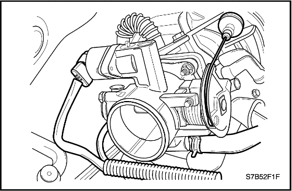
Cuerpo de la mariposa
Procedimiento de desmontaje
Aviso: Tenga cuidado de no provocar vertidos al desmontar el cuerpo de la mariposa. Cierre el tubo flexible de entrada y salida de refrigerante utilizando la herramienta adecuada.
- Desconecte el cable negativo de la batería.
- Desmonte el conjunto de filtro del aire. Consulte la Sección 1C1, Mecánica del motor.
- Desconecte el cable del acelerador.
- Desenchufe el conector del sensor de posición del acelerador (TPS).
- Desconecte los tubos flexibles de entrada/salida del refrigerante.
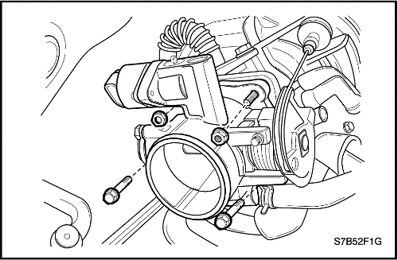
Aviso: Cierre la entrada del colector de admisión tras desmontar el cuerpo del acelerador y no entrará resto alguno de suciedad.
- Quite los tornillos y tuercas de retención del cuerpo del acelerador.
- Desmonte el cuerpo del acelerador con la junta.
procedimiento de montaje
- Monte el cuerpo del acelerador con su nueva junta.
- Apriete los tornillos y tuercas de retención del cuerpo del acelerador.
Apretar
Tuercas de fijación del cuerpo del acelerador a 10,5 N•m (7,7 lb-pie).
Aviso: Tras conectar el cable del acelerador, compruebe que la válvula del acelerador esté completamente cerrada. Y compruebe si existe un contacto con el pedal del acelerador al detener el motor.
- Conecte el cable del acelerador.
- Enchufe el conector del sensor de posición del acelerador (TPS) y IACV.
- Conecte el manguito de refrigerante.
- Conecte el cable negativo de la batería.
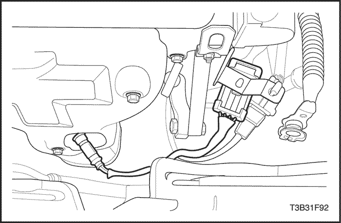
Sonda lambda calentada delantera (HO2S1)
Procedimiento de desmontaje
- Desconecte el cable negativo de la batería.
Aviso: El sensor de oxígeno utiliza un cable espiral y un conector que están permanentemente unidos al mismo. Dicho cable espiral no debe separarse del sensor de oxígeno. Si el cable espiral se quitara o resultara dañado, el funcionamiento adecuado del sensor de oxígeno se podría ver afectado. Maneje con cuidado el sensor de oxígeno. No lo deje caer al suelo.
- Desenchufe el conector de la sonda lambda calentada delantera (HO2S1).
Precaución: Espere a que se enfríe el motor antes de desmontar el sensor de oxígeno. Si no lo hace, podrían dañarse las roscas del colector de escape.
- Desmonte con cuidado el HO2S1 del colector de escape con ayuda del extractor/instalador EN-48259 del sensor de oxígeno.
procedimiento de montaje
Importante: Se utiliza un producto antigripaje en las roscas del sensor de oxígeno. Dicho producto está compuesto de grafito líquido y cuentas de vidrio. El grafito se consumirá, pero no las cuentas de vidrio, lo cual facilita que se desmonte el sensor. Los sensores nuevos o de reciclado ya vendrán con el compuesto aplicado a las roscas. Si se desmonta el sensor de algún motor y, por alguna razón, tiene que volverse montar, se debe aplicar el producto antigripaje a las roscas antes de reinstalar dicho sensor.
- Recubra las roscas de la HO2S1 con el producto antigripaje si fuera necesario.
- Monte la HO2S1 en el colector de escape.
Apretar
Apriete el sensor de oxígeno hasta 42 N•m (31 lb-pie).
- Enchufe el conector de la HO2S1.
- Conecte el cable negativo de la batería.

Sonda lambda calentada trasera (HO2S2)
Procedimiento de desmontaje
- Desconecte el cable negativo de la batería.
Aviso: El sensor de oxígeno utiliza un cable espiral y un conector que están permanentemente unidos al mismo. Dicho cable espiral no debe separarse del sensor de oxígeno. Si el cable espiral se quitara o resultara dañado, el funcionamiento adecuado del sensor de oxígeno se podría ver afectado. Maneje con cuidado el sensor de oxígeno. No lo deje caer al suelo.
- Desenchufe el conector eléctrico.
Precaución: Espere a que se enfríe el motor antes de desmontar el sensor de oxígeno. Si no lo hace, podrían dañarse las roscas del colector de escape.
- Desmonte con cuidado el HO2S2 con ayuda del extractor/instalador EN-48259 del sensor de oxígeno.
procedimiento de montaje
Importante: Se utiliza un producto antigripaje en las roscas del sensor de oxígeno. Dicho producto está compuesto de grafito líquido y cuentas de vidrio. El grafito se consumirá, pero no las cuentas de vidrio, lo cual facilita que se desmonte el sensor. Los sensores nuevos o de reciclado ya vendrán con el compuesto aplicado a las roscas. Si se desmonta el sensor de algún motor y, por alguna razón, tiene que volverse montar, se debe aplicar el producto antigripaje a las roscas antes de reinstalar dicho sensor.
- Recubra las roscas de la HO2S1 con el producto antigripaje si fuera necesario.
- Monte la HO2S2 en el tubo de escape delantero.
Apretar
Apriete el sensor de oxígeno hasta 42 N•m (31 lb-pie).
- Enchufe el conector de la HO2S2.
- Conecte el cable negativo de la batería.
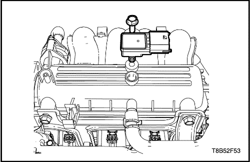
Sensor de presión absoluta del colector de temperatura (T-MAP)
Procedimiento de desmontaje
- Desconecte el cable negativo de la batería.
- Desenchufe el conector del sensor T-MAP.
- Quite el tornillo de retención del sensor T-MAP.
- Desmonte el sensor T-MAP.
procedimiento de montaje
- Monte el sensor T-MAP.
- Monte el tornillo de retención del sensor T-MAP.
Apretar
Tornillo de retención del sensor de presión absoluta del colector de temperatura (T-MAP) a 10 N•m (89 lb-pulg.).
- Enchufe el conector del sensor T-MAP.
- Conecte el cable negativo de la batería.
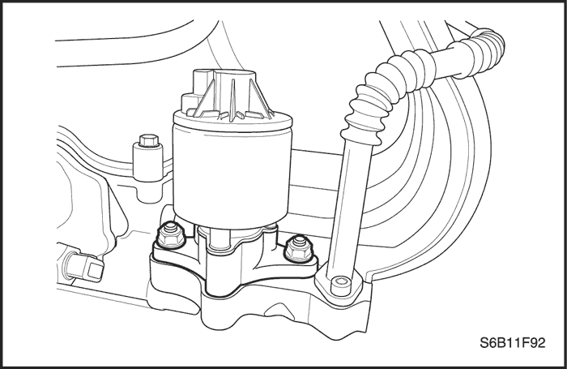
Válvula de recirculación de gases de escape (EGR)
Procedimiento de desmontaje
- Desconecte el cable negativo de la batería.
- Desenchufe el conector eléctrico de la válvula de EGR.
- Quite las tuercas y desmonte la válvula de EGR.
procedimiento de montaje
- Limpie las superficies de acoplamiento.
- Monte la junta nueva de la válvula de EGR.
- Monte la válvula de EGR con sus tuercas de fijación.
Apretar
Apriete las tuercas de fijación de la válvula de recirculación de gases de escape hasta 30 N•m (22 lb-pie).
- Enchufe el conector eléctrico de la válvula de EGR.
- Conecte el cable negativo de la batería.
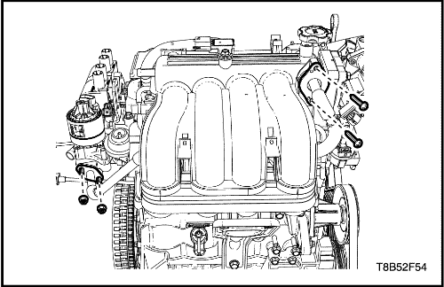
Tubo de recirculación de gases de escape (EGR)
Procedimiento de desmontaje
- Desmonte el tornillo de retención de la tubería EGR del colector de admisión.
- Retire la tuerca de retención de la tubería EGR de la carcasa de salida de refrigerante.
- Desmonte el tubo de la válvula EGR.
procedimiento de montaje
- Monte la tubería de EGR.
- Monte y apriete la tuerca de retención de la tubería EGR en la carcasa de salida de refrigerante.
- Monte y apriete el tornillo de retención de la tubería EGR en el colector de admisión.
Apretar
- Tuercas de fijación de la tubería de recirculación de gases de escape a 10 N•m (89 lb-pulg.).
- Tornillos de retención de la tubería de recirculación de gases de escape a 22 N•m (16,2 lb-pulg.).
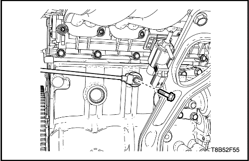
Sensor de golpes
Procedimiento de desmontaje
- Desconecte el cable negativo de la batería.
- Desenchufe el conector eléctrico del sensor de picado de las bielas.
- Retire el tornillo de retención del sensor de golpes del bloque motor.
- Desmonte el sensor de picado de las bielas.
procedimiento de montaje
- Monte el sensor de picado de las bielas.
- Coloque el tornillo de retención del sensor de golpes.
Apretar
Tornillo del sensor de golpes a 20 N•m (15 lb-pie).
- Enchufe el conector eléctrico en el sensor de picado de las bielas.
- Conecte el cable negativo de la batería.
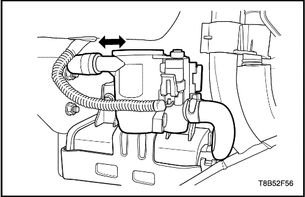
Ventilación del cartucho de emisión de vapores (EVAP)
Procedimiento de desmontaje
- Desconecte el cable negativo de la batería.
- Enchufe el conector de la válvula solenoide de ventilación del cartucho EVAP.
- Desconecte el tubo flexible de ventilación del cartucho EVAP.
- Desmonte el conjunto de ventilación del cartucho EVAP empujándolo hacia el lado izquierdo.
procedimiento de montaje
- Monte el conjunto de ventilación del cartucho EVAP empujándolo hacia el lado derecho.
- Conecte el tubo flexible de ventilación del cartucho EVAP.
- Enchufe el conector de la válvula solenoide de ventilación del cartucho EVAP.
- Conecte el cable negativo de la batería.
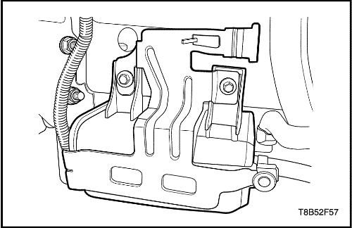
Cartucho de emisión de vapores (EVAP)
Procedimiento de desmontaje
- Desmonte la ventilación del cartucho EVAP. Consulte "Ventilación del cartucho de emisión de vapores (EVAP)"en esta sección.
- Desconecte el tubo flexible de entrada y salida del cartucho EVAP.
- Retire el tornillo de retención del soporte del cartucho EVAP.
- Desmonte el cartucho EVAP.
procedimiento de montaje
- Monte el cartucho EVAP.
- Monte el tornillo de retención del soporte del cartucho EVAP.
Apretar
Tornillos de retención del soporte del cartucho de emisión vapores a 8 N•m (71 lb-pulg.).
- Conecte el tubo flexible de entrada y salida al cartucho EVAP.
- Monte la ventilación del cartucho EVAP. Consulte "Ventilación del cartucho de emisión de vapores (EVAP)"en esta sección.
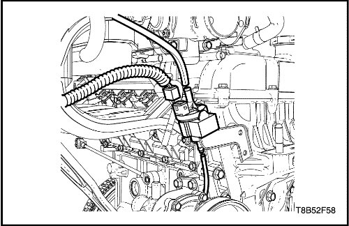
Purga del cartucho de emisión de vapores (EVAP)
Procedimiento de desmontaje
- Desconecte el cable negativo de la batería.
- Desmonte el conjunto de filtro del aire. Consulte la Sección 1C1, Mecánica del motor.
- Desenchufe el conector del solenoide de purga del cartucho EVAP.
- Desconecte el tubo flexible de entrada y salida del solenoide de purga del cartucho EVAP.
- Desmonte el solenoide de purga del cartucho del EVAP del soporte.
procedimiento de montaje
- Monte el solenoide de purga del cartucho del EVAP en el soporte.
- Conecte el tubo flexible de entrada y salida del solenoide de purga del cartucho EVAP.
- Enchufe el conector del solenoide de purga del cartucho del EVAP.
- Monte el conjunto del filtro de aire. Consulte la Sección 1C1, Mecánica del motor.
- Conecte el cable negativo de la batería.
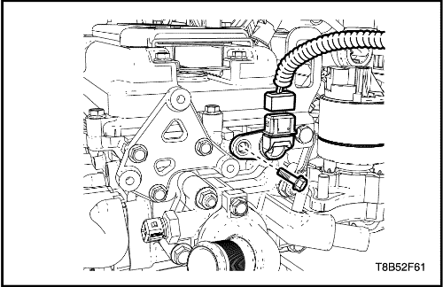
Sensor de posición del árbol de levas (CMP)
Procedimiento de desmontaje
Aviso: Tenga cuidado de no provocar vertidos de aceite del motor tras desmontar el sensor CMP.
- Desmonte la bobina de encendido.
- Desenchufe el conector eléctrico del sensor.
- Quite el tornillo y desmonte el sensor de posición del árbol de levas (CMP).
procedimiento de montaje
- Monte el CMP con sus tornillos.
Apretar
Tornillos del sensor de posición del árbol de levas a 12 N•m (106 lb-pulg.).
- Enchufe el conector eléctrico del sensor.
- Monte la bobina de encendido.
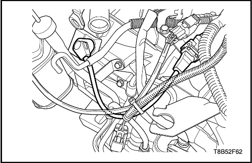
Sensor de posición del cigüeñal (CKP)
Procedimiento de desmontaje
- Desconecte el cable negativo de la batería.
- Desenchufe el conector del sensor de posición del cigüeñal (CKP).
- Quite el tornillo de retención del CKP.
- Desmonte el sensor de CKP.
procedimiento de montaje
- Monte el CKP.
- Coloque el tornillo de retención del CKP.
Apretar
Tornillo de retención del sensor de posición del cigüeñal a 6,5 N•m (58 lb-pulg.).
- Enchufe el conector del sensor de posición del cigüeñal (CKP).
- Conecte el cable negativo de la batería.
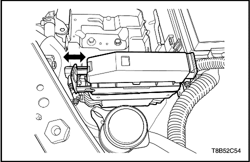
Módulo de control electrónico (ECM)
Procedimiento de desmontaje
- Desconecte el cable negativo de la batería.
- Tire de la palanca del conector del ECM.
- Desenchufe el conector del ECM.
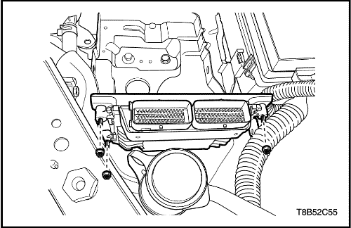
- Quite la tuerca de retención del soporte del ECM.
- Desmonte el ECM.
procedimiento de montaje
- Monte el ECM.
- Monte la tuerca de retención del soporte del ECM.
Apretar
Tuercas de fijación del soporte del módulo de control del motor a 7 N•m (62 lb-pulg.).
- Enchufe el conector del ECM.
- Empuje la toma del conector ECM.
- Conecte el cable negativo de la batería.
| © Copyright Chevrolet Europe. Reservados todos los derechos |